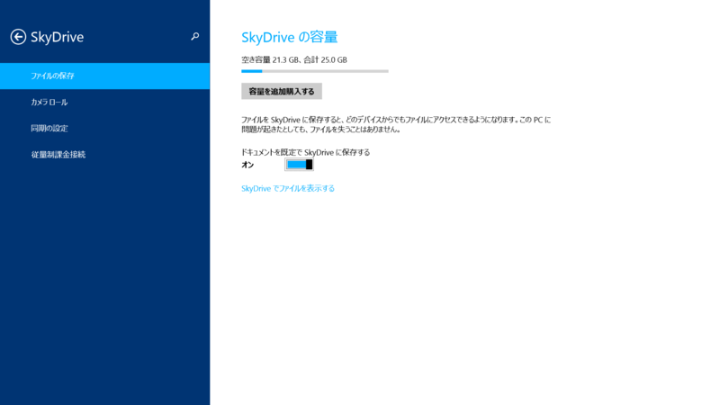
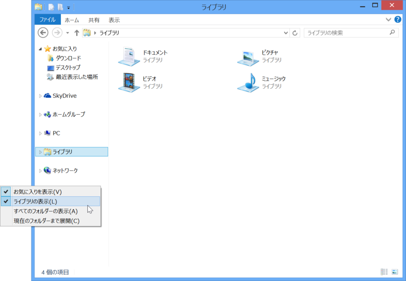

Windows 8.1 を入れたらまずやることを独断と偏見で3つだけ選んでみた。
執筆日時：
1. Pictures/Screenshots を削除して SkyDrive へシンボリックリンクを張る
Windows 8.x では［Windows］＋［PrintScreen］キーでデスクトップのスクリーンショットを撮影し、Pictures/Screenshots へ PNG 画像として保存できる。Surface Pro/RT の場合は、本体の Windows ボタン＋［Volume Down］キーでも可能。また、最新のドライバーがインストール済みであれば、［Windows］＋［Fn］＋［Space］キーでもスクリーンショットが撮れる。
- Windows 8 は［Windows］＋［PrintScreen］キーでデスクトップのスクリーンショットを“ピクチャー”フォルダに保存できる - だるろぐ
- Surface RT：（本体側の）［Windows］キーの機能 - だるろぐ
これを複数 PC で同期するために SkyDrive へシンボリックを張っておくのが自分の流儀。
mklink /d C:\Users\Hidetoshi\Pictures\Screenshots C:\Users\Hidetoshi\SkyDrive\Screenshots
管理者権限のコマンドプロンプトでこんな感じに。保存場所が固定されているファイルを SkyDrive で同期させたい場合なんかに応用してネ。
【レビュー】右クリックメニューから任意のフォルダを「SkyDrive」の同期対象に加える「SkyShellEx」 - 窓の杜 こういうツールがあれば楽なんだけど、残念ながら Windows 8.1 では使えない。
2. SkyDrive のオフライン利用を有効にする。

ディスク容量に余裕のある環境だったら、オフライン利用を有効化しておくとよい。Windows 8.1 の SkyDrive はローカルとクラウドを賢く使い分けてくれるけれど、ストレージに余裕があるのならば全部ローカルに持っておくのがシンプルでわかりやすい。
［設定］チャームで［オプション］を開くと［すべてのファイルにオフラインでアクセスする］というオプションにアクセスできるので、これを有効化しておく。

この際だから［ドキュメントを既定で SkyDrive に保存する］も有効化しておくといいよ。とくにオフィス文書は SkyDrive で集中管理すると失くさずに済むし、リモートからもアクセス可能でいい。仮に SkyDrive が 7GB しかなくても、オフィス文書程度では使い切らない……はず。
3. とくにない。
3つと言ったな……あれはウソだ。あとはアプリをインストールしたりだけど、これもできるだけクラウドに放り込んでおけば移行は楽ちん。ぶっちゃけ、待つだけ。
楽な世の中になったと思う。
追記（2013/10/18 16:57）

ソレだ！
せっかく定着しかけた便利機能なのに、なんでここで無効化しちゃうかな！ きっと統計をとったら利用率が低かったのだろうけれど、ユーザーインターフェイスはユーザーの期待に応えるだけでなく、よりよい使い方を導く・提案する“先生”であってもよいと思うので（まぁ、かなり反発は受けるのだが）、もうちょっと粘ってもらってもよかったと思う。